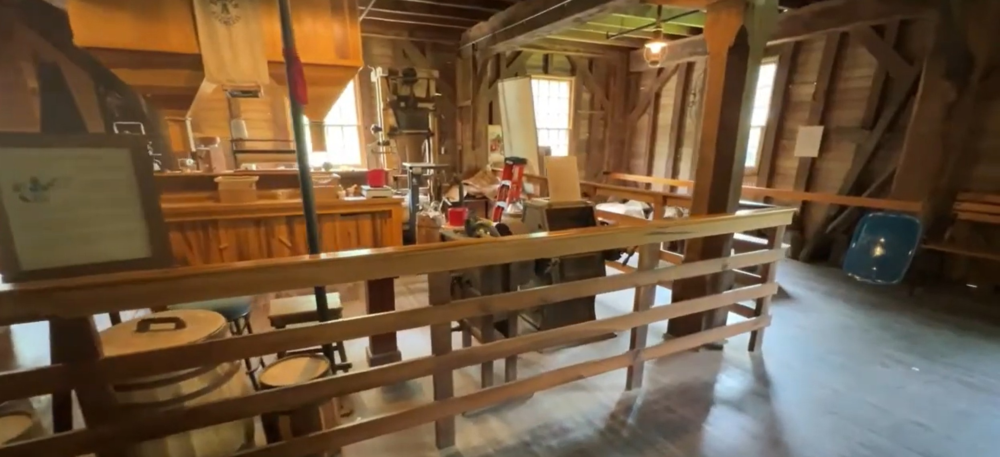

Lanterman's Mill
A beautifully restored historic mill where rushing water, stone walls, and Ohio history come together.

Our Visit
We stopped at Lanterman's Mill while exploring the Youngstown area.
The sound of the water, the impressive stone mill, and the surrounding park made this one of those places where you naturally slow your pace and enjoy the scenery.
It is easy to understand why this has become one of the most photographed historic mills in Ohio.
A Little History
Lanterman's Mill was originally built in the mid-1800s and has become one of the best-known landmarks in Mill Creek Park.
Powered by the waters of Mill Creek, the mill served local communities for many years before being restored as a historic attraction.
Today it continues to preserve an important piece of Ohio's milling heritage while welcoming visitors from across the country.
Come Along With Us
Watch the Lanterman's Mill.
▶ Watch on YouTubeNearby Discoveries
Lanterman's Mill is part of beautiful Mill Creek Park, making it easy to combine your visit with walking trails, gardens, scenic overlooks, and other park attractions.
As GO-CA-TION continues to grow, this page will connect with more destinations throughout northeastern Ohio.